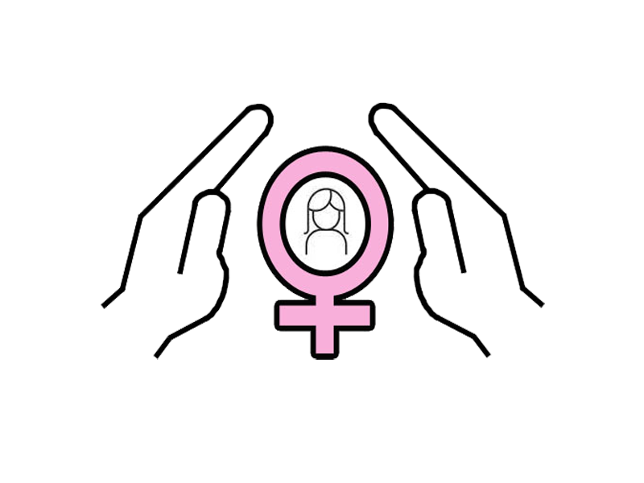

TIPS AND PRECAUTIONS
Follow below tips & precautions to safe yourself:
 Stay aware of your surroundings.
Stay aware of your surroundings.
Avoid using headphones or earbuds in public.
Use well-lit and populated routes.
Be cautious about sharing your personal information.
Carry some safety tools such as pepper spray, small knife.
Keep your phone fully charged and accessible.
Avoid walking or travelling alone at night.